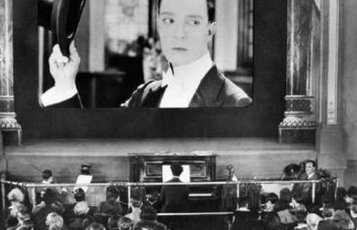

Incidental music, classical and the silent era
Incidental music was written to accompany stage plays. Many of Shakespeare’s works incorporated incidental music. Bij the 19th century such music was commonplace. When silent films began to appear (mid 1890's-1920's), music was the most important way to set the mood, with film scores being improvised in real time. The first score specifically written for a film was by famous composer Camille Saint-Saëns. The planets (1916) an orchestral suite bij Gustav Holst, has been of great influence on more recent composers, notably John Williams (Star Wars Imperial March) and Hans Zimmmer (Gladiator). To listen: Gustav Holst - Jupiter (from the Planets)